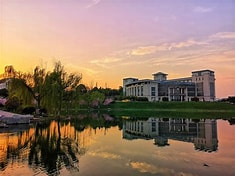

在城市的喧嚣中，有一方宁静而美丽的天地，那便是我们的校园——春华校园。
这里不仅是知识的殿堂，更是我们成长的乐园，每一寸土地都承载着我们的青春记忆。
走进校园，自然风光如诗如画。
春天，校园像是被大自然打翻了调色盘。五彩斑斓的花朵竞相绽放，红的像火，粉的像霞，白的像雪，微风拂过，花香四溢，仿佛置身于花的海洋。
夏天，绿树成荫，高大的树木像忠诚的卫士，为我们遮挡炎炎烈日。课间时分，我们总爱在树下嬉戏、谈天，享受那片清凉。
秋天，金黄的树叶纷纷飘落，宛如一只只金色的蝴蝶在空中翩翩起舞，给校园铺上了一层柔软的地毯。
冬天，雪花纷飞，校园银装素裹，宛如童话世界，我们在雪地里堆雪人、打雪仗，欢声笑语回荡在校园的每一个角落。
校园的人文景观同样令人陶醉。宏伟的图书馆，是知识的宝库。一排排整齐的书架上摆满了各类书籍，从文学名著到科学典籍，应有尽有。在这里，我们可以穿越时空，与古今中外的智者对话，汲取知识的养分。教学楼里，宽敞明亮的教室是我们学习的主阵地。老师们在这里传道授业解惑，用智慧的光芒照亮我们前行的道路。而校史馆，则像是一部生动的史书，记录着学校的发展历程和辉煌成就，激励着我们不断努力，为校争光。
校园里还有一群可爱的人，他们是辛勤的老师和朝气蓬勃的同学。
老师们不仅在课堂上耐心教导我们，还在生活中关心我们的成长。同学们则相互帮助、相互鼓励，共同进步。在这里，我们收获了知识，更收获了友谊和成长。
校园的文化活动也丰富多彩。运动会、文艺汇演、社团活动……每一个活动都充满了活力与激情。在运动会上，我们挥洒汗水，为班级荣誉而拼搏；在文艺汇演中，我们展示才艺，绽放青春光彩；在社团活动中，我们发展兴趣爱好，拓展自己的视野。
春华校园，你是我们梦想起航的地方。
在这里，我们度过了美好的时光，留下了难忘的回忆。我们将带着对你的热爱和眷恋，勇敢地迈向未来，去书写属于自己的精彩篇章。
以下是一些校园内著名的人文景观：
